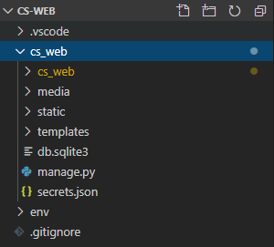

Django 03. Settings.py 초기설정
Git 업로드를 위해 secret_key를 분리하고, timezone, static 경로 등을 설정합니다.
1. SECRET_KEY 분리
django는 프로젝트 시작 시 무작위의 SECRET_KEY 값을 생성합니다.
이 SECRET_KEY는 암호화 서명 등 보안 설정에 사용되는 중요한 값입니다.
django 공식 문서에서도 이 KEY값을 숨기는것을 권장하고 있습니다.
이 프로젝트는 Git을 통해 버전관리를 하므로 SECRET_KEY를 json으로 분리하겠습니다.
manage.py가 있는 루트에 secrets.json 파일을 생성해주고 settings.py의 SECRET_KEY값을 추가해줍니다.
1 | { |
(위의 key값은 예시일 뿐으로 현재 프로젝트와 상관없는 무작위 값입니다.)
후에 SMTP를 사용할 때, mail host pw값과 같은 비밀값들을 추가해줄 수 있습니다.
settings.py의 SECRET_KEY 부분을 방금 생성한 secrets.json을 읽어오도록 수정해줍니다.
1 | import json |
프로젝트 최상단 루트에 .gitignore 파일을 생성하고 secrets.json 파일을 추가해줍니다.
1 | secrets.json |
secrets.json 뿐만 아니라 django에서 숨겨야하는 값들을 모두 gitignore에 추가하기 위해 아래의 gitignore.io 사이트를 참고하여 추가해줍니다.
이미 SECRET_KEY값이 노출되었다면 Django Secret_key 생성하기 사이트에서 SECRET_KEY를 다시 생성할 수 있습니다.
2. LANGUAGE_CODE / TIME_ZONE 설정
django-admin 등을 한글형식으로 바꾸고 한국 시간대를 사용하기 위해 settings.py의 LANGUAGE_CODE와 TIME_ZONE을 아래와 같이 수정해줍니다.
1 | LANGUAGE_CODE = 'ko' |
*django 3버전으로 넘어오면서 2버전대에서 사용하던 ‘ko-kr’을 사용하면 오류가 발생하게 됩니다.
3. TEPLATES 경로설정
Template 폴더를 각 App마다 생성하지 않고 한 곳에서 관리하기 위해 TEMPLATES의 ‘DIRS’를 수정해줍니다.
1 | TEMPLATES = [ |
4. STATIC 경로설정
마찬가지로 django 프로젝트의 css, js, img 등 정적인 파일들을 관리하기 위해 STATIC_URL을 수정하고, STATICFILES_DIRS, STATIC_ROOT 경로를 추가해줍니다.
1 | STATIC_URL = '/static/' |
STATICFILES_DIRS은 static 파일을 찾는 경로, STATIC_ROOT는 배포작업시 collectstatic 명령을 사용했을 때 정적파일들을 모으고 지정한 경로로 옮겨주는 역할을 합니다.
5. MEDIA 경로설정
파일 / 사진 첨부와 같이 media파일을 저장하는 경로를 설정하기 위해 MEDIA_URL과 MEDIA_ROOT를 추가해줍니다.
1 | MEDIA_URL = '/media/' # 업로드 할 경로 |
지정된 ROOT에 미리 templates, static, media 폴더를 생성해줍니다.
위의 설정을 모두 마쳤다면 프로젝트 개발 전 전체구조는 아래와 같습니다.
